Développement WEB
En cours ou en autonomie.
Création de site web pour des projets durant les cours, les stages et pour mon portfolio.
Utilisation de la méthode MVC, ainsi que du framework Symfony.
Développement Application
En cours ou en autonomie.
Création d'application Java et PYTHON durant les cours avec l'utilisation d'objets.
Utilisation d'Android Studio pour coder une application mobile.
Utilisation du langage APEX lors de mon stage à la MAAF.
Développement Application
En cours ou en autonomie.
Création de base de données lors de projets durant les cours et les stages.
Utilisation de logiciel permettant la création de MCD et de MLR.
PPE - Médiathèque de Cholet
Contexte :
Le contexte de ce projet était de permettre à la médiathèque intercommunale de Cholet de pouvoir gérer informatiquement leurs ressources. Leur souhait était d’avoir une application web leur permettant de gérer les achats, les emprunts de livres et les adhérents. L’application ne devant être utilisée que par le personnel de la médiathèque.
Pour ce projet, nous avons dû utiliser un serveur MySQL, un outil comme « Sublime Text » et la méthode MVC pour coder l’application.
Fonctionnalités :
Quand le personnel se connecte à l’application, il est dirigé sur une page lui donnant accès à toutes les fonctionnalités dont il pourrait avoir besoin.
Le personnel de la bibliothèque peut grâce à des formulaires, ajouter des adhérents, des livres (ou des exemplaires de livres) ainsi que des emprunts.
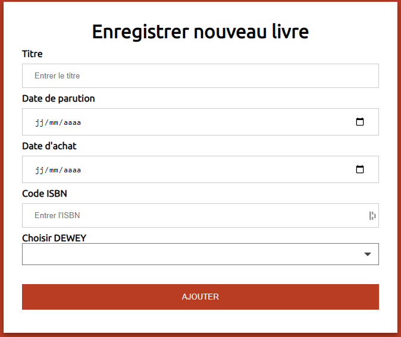
Le personnel peut aussi vérifier s'il y a des emprunts qui arrive en fin de date et voir l’adhérent qui l’a emprunté.
Synthèse :
Le projet a été mené jusqu’au bout avec toutes les fonctionnalités opérationnelles de l’application. Quand une personne se connecte elle peut accéder aux listes des adhérents, aux ouvrages disponibles et aux emprunts non rendus. Ce projet m’a permis d’apprendre et mettre en place la méthode MVC dans un projet, ainsi que d’améliorer mes connaissances en PHP.
PPE - Laboratoire LBc
Contexte :
Le contexte de ce projet était de permettre au laboratoire LBc de pouvoir mettre à disposition du service de gestion du personnel une application web permettant la gestion des frais de déplacements des visiteurs médicaux. L’application ne pouvant être utilisée que par le personnel du service de gestion du personnel, ainsi que les visiteurs médicaux voulant déposer leurs frais pour être remboursés.
Pour ce projet, nous avons dû utiliser un serveur MySQL, un outil comme « Sublime Text » et la méthode MVC pour coder l’application.
Fonctionnalités :
Quand une personne se connecte (avec son login et mot de passe), elle est automatiquement détectée en tant que visiteur ou gestionnaire du personnel.
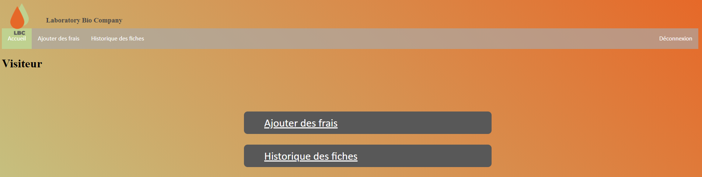
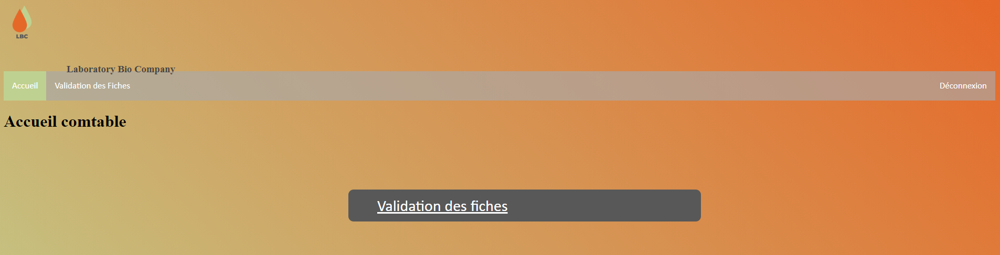
Suite à cela, si c'est un visiteur, il peut soit ajouter des frais ou consulter l’historique de ses fiches.
Si c’est un membre du service de gestion du personnel, il peut valider les fiches qui ont été préalablement remplies par les visiteurs.
Synthèse :
Le projet a été mené jusqu’au bout avec toutes les fonctionnalités opérationnelles de l’application. Quand une personne se connecte elle peut, selon ses fonctions, ajouter ou valider des frais.
Stage première année
Présentation de l’entreprise :
La MAAF est une société d’assurance nationalement reconnue et son siège social se trouve à Chauray, Niort (79). Il s’agit d’une des enseignes du groupe COVÉA, une SGAM (Société de Groupe d’Assurance Mutuelle), regroupant aussi les MMA, la GMF et Apgis.
Tâches à réaliser :
M’adapter au CRM Salesforce ainsi qu’à la gestion de projet de manière Agile. Pour prendre en mains Salesforce j’ai dû utiliser Trailhead, qui est un site uniquement basé sur l’apprentissage de Salesforce, avec les fonctionnalités et les différents aspects de programmations qui y sont liés. Salesforce utilise une programation orientée objets avec le langage APEX, plus une infrastructure de développement Web, nommée Visualforce. Il utilise aussi pour la gestion des bases de données les langages SOQL et SOSL.
La mission était la création de rapport et d’un tableau de bord Salesforce pour vérifier le bon fonctionnement d’un batch de purge. Le premier rapport permet de visualiser les demandes qui arrivaient au terme prévu, demande ouverte depuis plus de 25 mois (droit à l’oubli). Tandis que le deuxième permet de voir les demandes qui auraient dû être supprimées par le batch de purge. Le tableau de bord permet de voir plus simplement ces deux rapports en évitant les détails inutiles et en priorisant les informations majeures.
Ma troisième mission était la création d’un batch de purge similaire à celui de ma deuxième mission. Le batch avait pour but de supprimer certains contrats qui avaient des particularités (contrats qui ne sont plus liés à une demande ou encore ceux qui devraient être supprimé en fonction du droit à l’oubli).
Ma dernière mission était d’écrire et de réaliser des tests pour le batch de purge créé lors de ma troisième mission.
Réalisation :
Le tableau de bord réalisé au cours de ma deuxième mission.
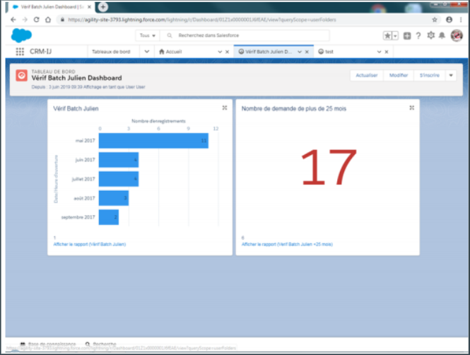
Extrait du batch de purge réalisé lors de ma troisième mission.
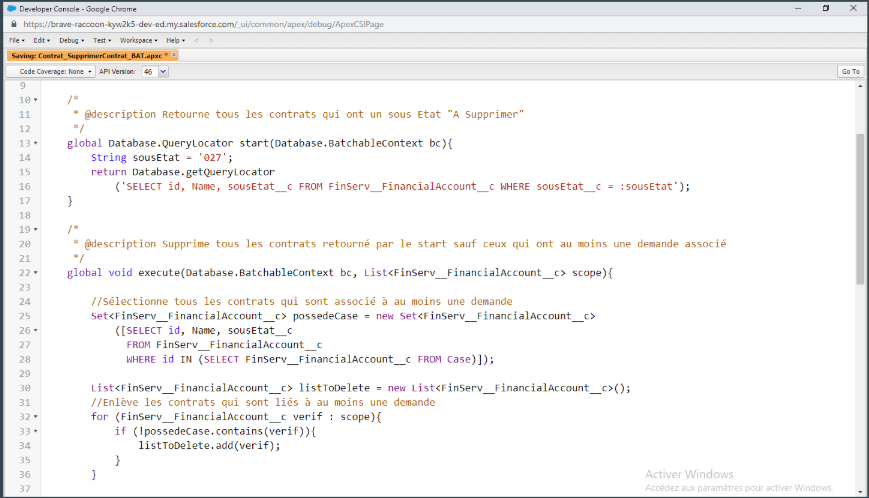
Extrait du test du batch de purge.
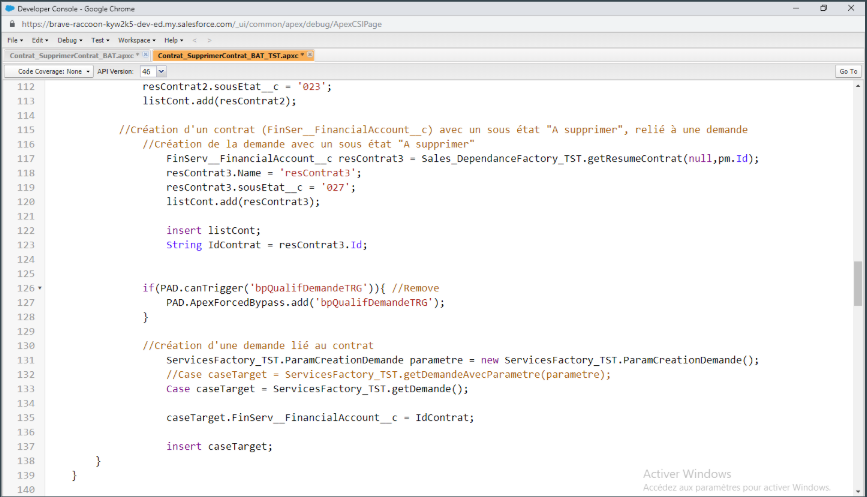
Stage deuxième année
Présentation de la structure :
Beaupréau-en-Mauges est la 5ème commune du Maine-et-Loire. Elle est situé au coeurs des Mauges, entre les villes d'Angers, Cholet et Nantes.
Tâches à réaliser :
Réaliser un applicatif web permettant une gestion informatique des documents pour le service d’urbanisme. Cet applicatif devait permettre l’ajout et la modification des documents, mais aussi un triage grâce à des filtres, et en sortir des statisques. De plus l’applicatif devait pouvoir générer des documents sous format PDF.
Réalisation :
Accueil vers le site permettant le choix du type de document d'urbanisme
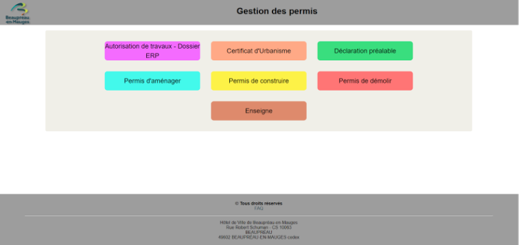
Accueil vers la partie Permis de Construire (exemple d'un onglets)
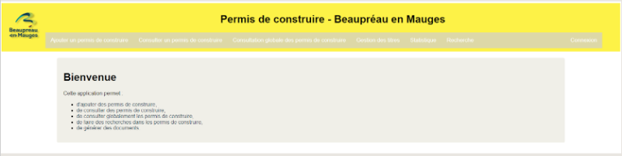
Tableau visualisant tous les Permis de Construire
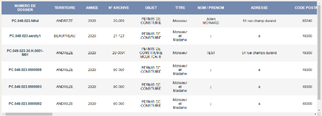
Partie statistique des Permis de Construire
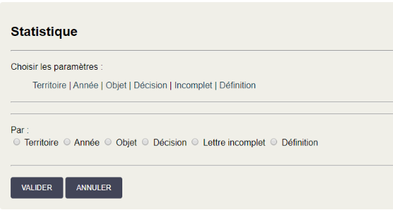
Partie génération des documents (au choix) d'un Permis de Construire
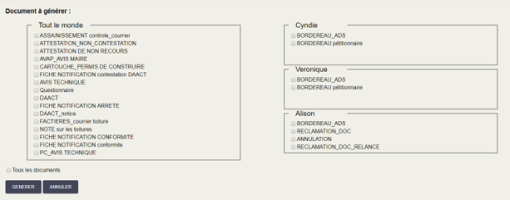
PRÉSENTATION
Bienvenue sur mon Porfolio,
Je suis Julien MOINARD, actuellement en seconde année de BTS SIO option SLAM (Solutions Logicielles et Applications Métiers) à l'ESUPEC de Cholet.
Avant mon BTS, j'ai obtenu mon baccalauréat S option SI avec la spécialité Mathématiques.
J'ai choisi l'option SLAM car j'ai toujours voulu comprendre ce qui se passait lorsceque nous utilisons des applications, des logiciels, ou même savoir comment est élaboré un site.
MON CURSUS
Formation
|
2018 - 2020 BTS SIO option SLAM à l'ESUPEC de Cholet (49) |
|
2019 |
|
2018 |
Expériences
|
2020 |
|
2019 |
MES COMPÉTENCES
Développement WEB
HTML / CSS / PHP
Développement Application
JAVA / PYTHON / APEX

Gestion de Bases de Données
SQL / SOQL / MLRD
MES PROJETS
Ce projet avait pour but de permettre à la médiathèque de Cholet de gérer ses adhérents, ses livres et exemplaires, ainsi que ses emprunts.
Ce projet a pour but de permettre au laboratoire LBc de pouvoir gérer les frais des visiteurs médicaux pour pouvoir les rembourser après leurs visites.
MÉTHODE DE VEILLE
Il existe deux méthodes pour pouvoir réaliser une veille, la méthode PUSH et la méthode PULL.
La première est la plus classique, l’utilisateur va régulièrement sur Internet pour en recueillir les informations les plus récentes dans un domaine particulier. Elle comprend plusieurs étapes :
- Définir le profil recherché
- Relancer la recherche
- Évaluer l’information obtenue
La méthode PUSH va fonctionner de manière similaire. L’utilisateur doit encore définir le profil recherché, mais après cela il reçoit une liste d’articles qui pourraient l’intéresser et qui sont en rapport avec le thème recherché.
MA VEILLE SUR SAMSUNG
Samsung préparerait un lecteur d’empreintes sous l’écran
beaucoup plus grand que celui des S10
Cliquez sur le bouton pour plus d'informations
APRÈS L’ÉCRAN PLIABLE,
SAMSUNG PLANCHE SUR L’ÉCRAN EXTENSIBLE !
Cliquez sur le bouton pour plus d'informations
MES STAGES
Stage de 6 semaines réalisé au siège social de la MAAF, à Chauray (79).
Stage de 5 semaines réalisé à la Communauté de Communes de Beaupréau en Mauges (49).